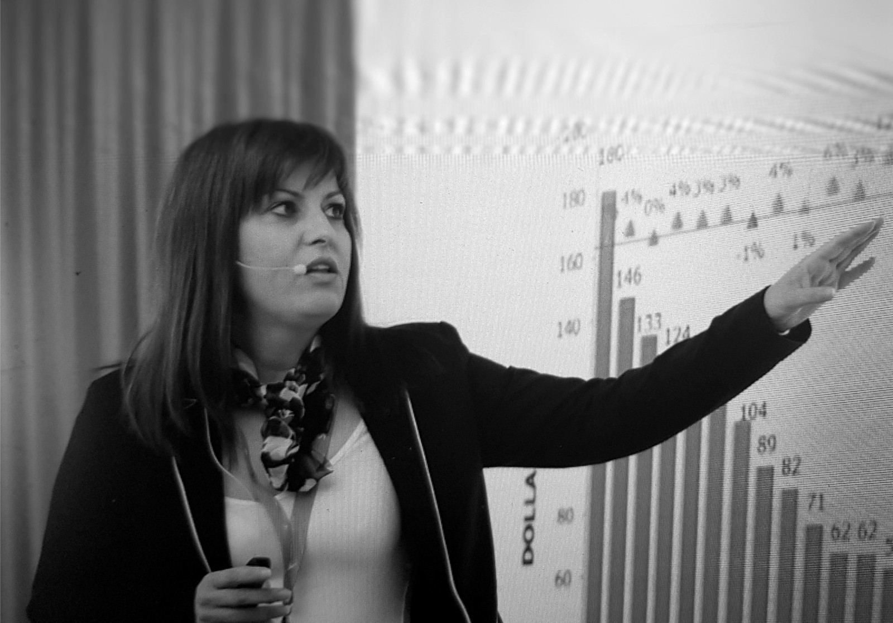
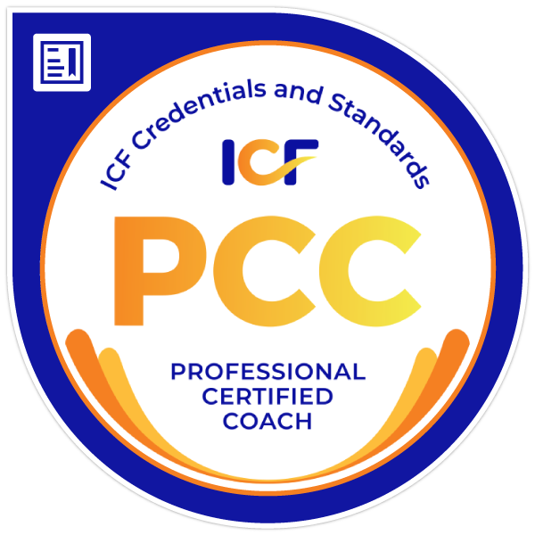
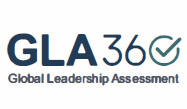

Anita Szabo · Leadership Coach
Leadership assessment and coaching for the leaders who carry your next change
Book a free 45-minute call
ICF Professional Certified CoachPCC credential
Certified GLA360 PractitionerGlobal Coach GroupThe challenge
Whatever the strategy says, employees experience change through their own manager. The leaders in that layer deliver today's targets while building tomorrow's structure, with little time to prepare.
planned enterprise changes the average employee went through in 2022 (2016: 2)
Gartner, via HBR, 2023of employees willing to support enterprise change in 2022, down from 74% in 2016
Gartner, via HBR, 2023of organisational redesigns met all their objectives in the planned time
McKinsey Global Surveyof the variance in team engagement is accounted for by the manager
Gallup, State of the American ManagerIn my own teams and in others', I've watched what happens when an outstanding individual contributor is promoted into a leadership role, and nobody prepares them for the shift. Within months, the whole team feels it: engagement drops, results stall, and sometimes up to half the team walks out.Not because the new leader lacked talent, but because no one walked them through the transition.
Without objective data, it is hard to see who is ready to lead through change, and there is rarely time to prepare every leader one by one.
The approach
The GLA360 shows how the leader is experienced by their boss, their peers and their team.
Two Leadership Growth Areas and an action plan. Coaching turns it into habit and builds the leader's own Authentic Leadership Model, a one-page framework for how you lead, decide and communicate.
The Team Profile shows shared blind spots; team coaching builds the team's shared Authentic Leadership Model.
Your Authentic Leadership Model
A one-page framework that defines how you lead, decide and communicate, built on your GLA360 results. This is how one looks in practice:
I expect my team members to assure success through:
My commitment to leading & developing people is to:
While working with people, I:
All we do is communicate, therefore:
In life, the only constant is change, therefore:
The assessment
The Global Leadership Assessment (GLA360) is built for business reality: co-developed with multinationals, it measures how you lead in practice, and it always ends in action.
3 BUSINESS BENEFITS OF THE
GLA360 ASSESSMENT
SEE
where your leaders really stand, as boss, peers and team see them.
FOCUS
on the 6 of 15 competencies that decide whether change lands.
ACT
on it: every debrief ends in a concrete action plan.
Prices in EUR, excluding VAT.
Six or more leaders from one team? The Team Profile is included. Let's talk about the options.
Investment
Which option fits? New leader: First Time Leader Programme. Experienced leader in change: GLA360 Essentials. Want a coach on your growth areas: GLA360 + Coaching. A whole leadership team: see the organisation options below.
For an experienced leader carrying change
€550 · 2 sessions
For a leader who wants a coach on the growth areas
€1,150 · 5 sessions
Recommended for new leaders
For a newly promoted, first-time leader
€1,750 · 8 sessions
Prices in EUR, excluding VAT. Debrief and coaching are held online, in English.
On-site work: travel and accommodation are charged to the client.
How it works
About
20+ years leading commercial teams in FMCG and OTC, with full P&L responsibility, through restructuring, integrations and new ways of working. My coaching is grounded in commercial reality, not just leadership theory.
What inspired me most was seeing talented people grow into leaders. Today, my former direct reports hold international leadership roles. That is why I became a coach.
For four years, through Ezra and directly, from middle managers to executives, across sales, marketing, finance, HR, legal and regulatory functions.
ICF Professional Certified Coach (PCC) · Certified GLA360 Practitioner (Global Coach Group) · Executive Coach, Ezra (an LHH company)
Self-tests
Self-reflection tools for leaders: where you stand in a new role, how ready the leaders one level below are for change, and which leadership style you reach for first. Calculated in your browser, nothing is stored or sent.
What leaders say
Anita is a patient and skillful coach who always has her client's best interests in mind. She brings a mix of both her decades worth of corporate leadership experience as well as her knowledge of effective coaching practices… I always left sessions feeling like I was equipped with new insights and had created a sustainable action plan to keep the momentum going.Dominique HawkinsCoaching client, US
As a coach, Anita exemplifies a well-rounded balance of empathy, acute listening skills, and an unwavering focus. She has continually encouraged me to refine my core values and principles and to broaden my perspectives… Engaging with Anita promises not just a coach, but a true partner committed to your growth journey.Fedrick WilliamProduct Owner & Coach, Germany
Anita is a genuine leader, being passionate about anything she does be it business, hobbies or supporting her team/individuals' development. In business very well rounded with great E2E ownership and experience in commercial front line in international environment. Walks the talk and brings the mind and the heart to support others.Lajos MagyariSenior Vice President, Reckitt
After a bit more than 3 years working side by side at the Leadership Team table with Anita… I really, really want to have her comprehensive soft skills. But I can't have them – they are hers… her consulting and coaching support – so I can improve my own skills and capabilities. You can have that support from her also. I recommend it!Hristo VuchevBusiness Owner / CFO, Bulgaria
Anita was my leader for three years. Besides being a great professional, she is a natural and highly motivating leader. In the supportive and inspiring environment, I was free to experiment, learn, fail, grow, and discover my strengths and development areas. Now, I attend coaching sessions with her, which help me develop my leadership skills further and overcome challenges. Anita puts a great emphasis on how I can unleash my strength. She always knows what I need and asks the right questions. Her humour, consistency, empathy, and great experience are essential additions to the sessions!Zsófia KontlerHead of Pharma Channel, Hungary
Working together with Anita over 5 years in different roles I had privilege to know her as mentor, peer, friend and supporter, quite often taking several of these roles at same time. Her combination of strong professional background combined with amazing soft skills and natural talent to identify root cause of any issue made her as perfect person to ask for advice and support, so her journey towards coaching and helping people and business grow and thrive it makes perfect fit with her personality and skills.Nikša KrižanacSales Director, Croatia
anita@szabocc.com · LinkedIn
Book a free 45-minute call